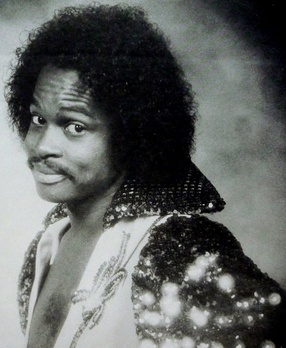

Roger Troutman
Roger Troutman, also known simply as Roger, was an American singer, musician, songwriter, and record producer. He was the founder of the band Zapp who helped spearhead the funk movement and influenced West Coast hip-hop due to the scene's heavy sampling of his music.
Complete Discography & Tracklists (3)